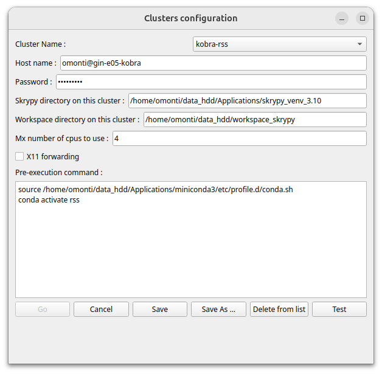

Cluster (HPC)
The procedure for installing Skrypy and its dependencies on a cluster is the same as for a local installation. Check with the cluster administrator.
Clusters configuration
You can put several clusters in the list.
(Configuration to be done on your PC, not on the cluster)
1. Click on blue button


2. A window opens: 
{kind=link}
Fill in the fields
Host name: login@clusterhost
Skrypy directory on this cluster: specifies the path where Skrypy is installed on the cluster
Workspace on this cluster: specifies the workspace on the cluster. This allows you to transfer your diagrams to be run on the cluster and can also (optional) be used to transfer your data to be processed.
Max number of cpus to use: maximum number of CPUs to use for your multiprocessing mode treatments.
X11 forwarding: check this box if display returns (image or curves) are expected.Attention
Depending on the cluster’s graphics management capability, the result is not guaranteed.
Pre-execution command: this field allows you to enter shell-like instructions to be executed before your diagrams run. Often useful when you need to activate conda first for example.
Registration
Save As ...for a new cluster name orSavefor modification